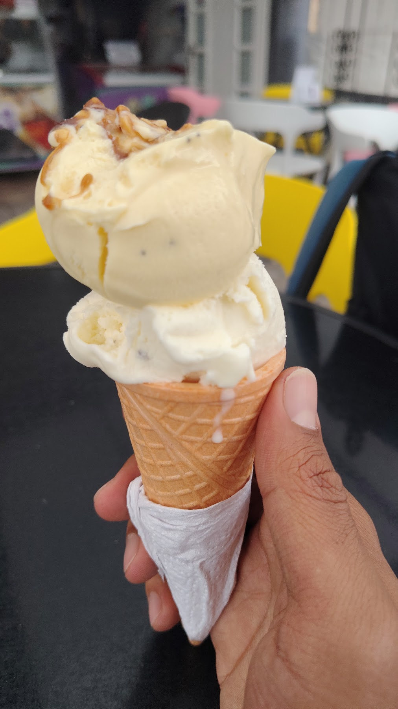
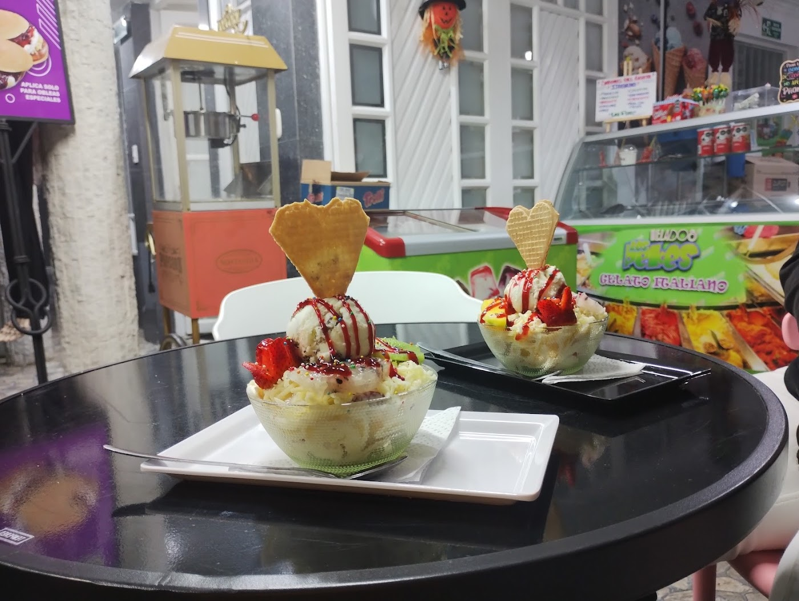
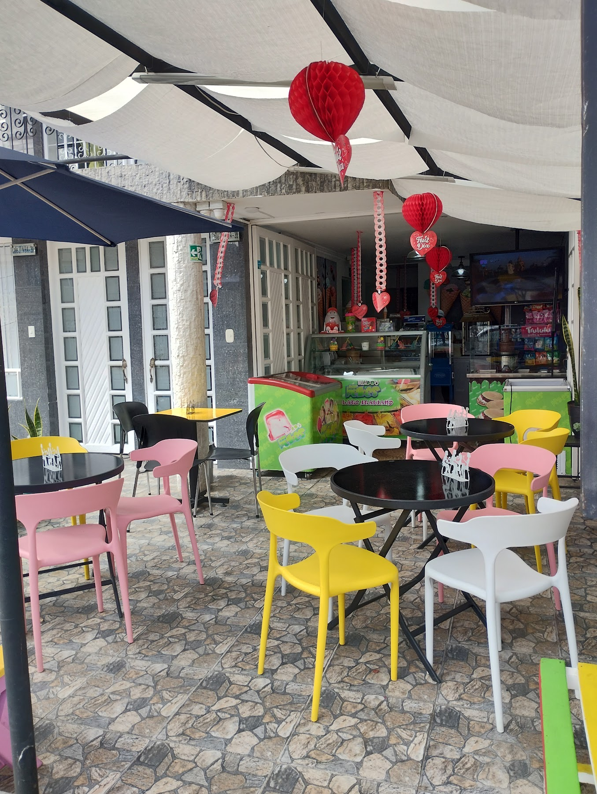
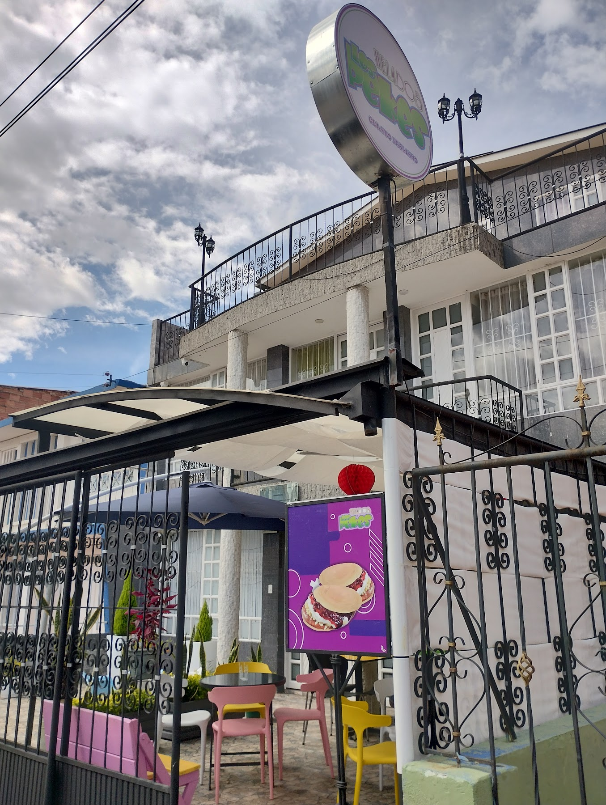

TU PAUSA DULCE EN SOGAMOSO
La vida sabe
mejor con
un helado.
Hay antojos que alegran el día.
Y lugares donde dan ganas de quedarse.

01 / ¿CON QUÉ TE PROVOCAMOS?
Un antojo para
cada día.
Para los del “algo fresquito”.
Para los del “hoy me lo merezco”.
Para ti.


Aquí el planes sonreír
02 / UN RINCÓN PARA DISFRUTAR
Pekes momentos.
Grandes
sonrisas.
Una salida con los amigos. Una tarde en familia. O ese helado que te regalas porque sí.
Entre sillas de colores y algo rico en la mesa, Los Pekes es una invitación a hacer una pausa en Sogamoso.
Excelente sabor y servicio 😋
Excelente lugar para disfrutar un delicioso Helado, un salpicón, una ensalada de frutas, malteadas…
Calificación de la ficha de Google Maps consultada en noviembre de 2026.
03 / EL PLAN QUEDA CERCA
Tu próxima
parada dulce.

04 / DEL ANTOJO AL MENSAJE
¿Qué se te
antoja hoy?
Elige tu favorito y consulta las opciones disponibles directamente con Los Pekes.
¿Prefieres llamar?315 893 6313 ↗
Vamos a darle gusto al antojo.
Continuar en WhatsAppSe abrirá WhatsApp con tu consulta. Tú decides enviarla; aún no es un pedido confirmado.
ANTES DE TU VISITA
Por si te
lo preguntabas.
¿Puedo pedir para llevar?
Sí, la ficha del negocio indica servicio para llevar. Consulta con Los Pekes las opciones, los precios y el tiempo de preparación.
¿Cuál es el horario?
No hay un horario confirmado en la información disponible. Puedes llamar al 315 893 6313 antes de ir.
¿Dónde veo los sabores y los precios?
Consulta la carta actual por WhatsApp. Las fotos corresponden al negocio, pero las presentaciones, los ingredientes y la disponibilidad pueden cambiar.
Consultar la carta ↗